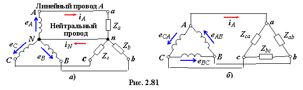

Ф а з а т р ё х ф а з н о й ц е п и. Под фазой трёхфазной цепи понимают участок цепи, по которой протекает одинаковый ток. Под фазой будем также понимать аргумент (ωt + Ψ ) синусоидальной функции. Таким образом, в зависимости от рассматриваемого вопроса, фаза − это либо участок трёхфазной цепи, либо аргумент синусоидальной функции.
В трёхфазной цепи различают фазы А, B и С генератора − источника напряжения (ИН) (рис. 2.81а) и фазы а,
b и с приёмника. Обозначают (окрашивают) их соответственно в жёлтый (фаза А), зелёный (фаза B) и красный (фаза С) цвета. Концы обмоток фаз ИН Х, Y и Z соединяют в общую точку N (реже обозначают эту точку символом 0 (ноль)) и называют её нейтралью трёхфазного генератора.

С х е м ы с о е д и н е н и я ф а з г е н е р а т о р а и т р ё х ф а з н о й н а г р у з к и. Обмотки статора трёхфазного генератора соединяют по схеме звезда (Y) (рис. 2.81а, слева) или треугольник (Δ) (рис. 2.81б, слева). Трёхфазная нагрузка (приёмник) также может быть соединена по схеме "звезда" или по схеме "треугольник" (рис. 2.81а, б, справа). Электрические величины, относящиеся
к генератору, будем снабжать индексами из прописных букв А, B и
C, а величины, относящиеся к трёхфазному приёмнику, − индексами из строчных букв а,
b и c.
Провода, соединяющие точки А и а, B и b, С и с, называют линейными (провод А, провод B и провод С); соответственно и токи в них IA, IB, IC называют линейными. Провод, соединяющий точку N (нейтраль генератора) с точкой n (нейтралью приёмника), называют нейтральным (иногда, нулевым), а ток IN в нём − током в нейтральном проводе.